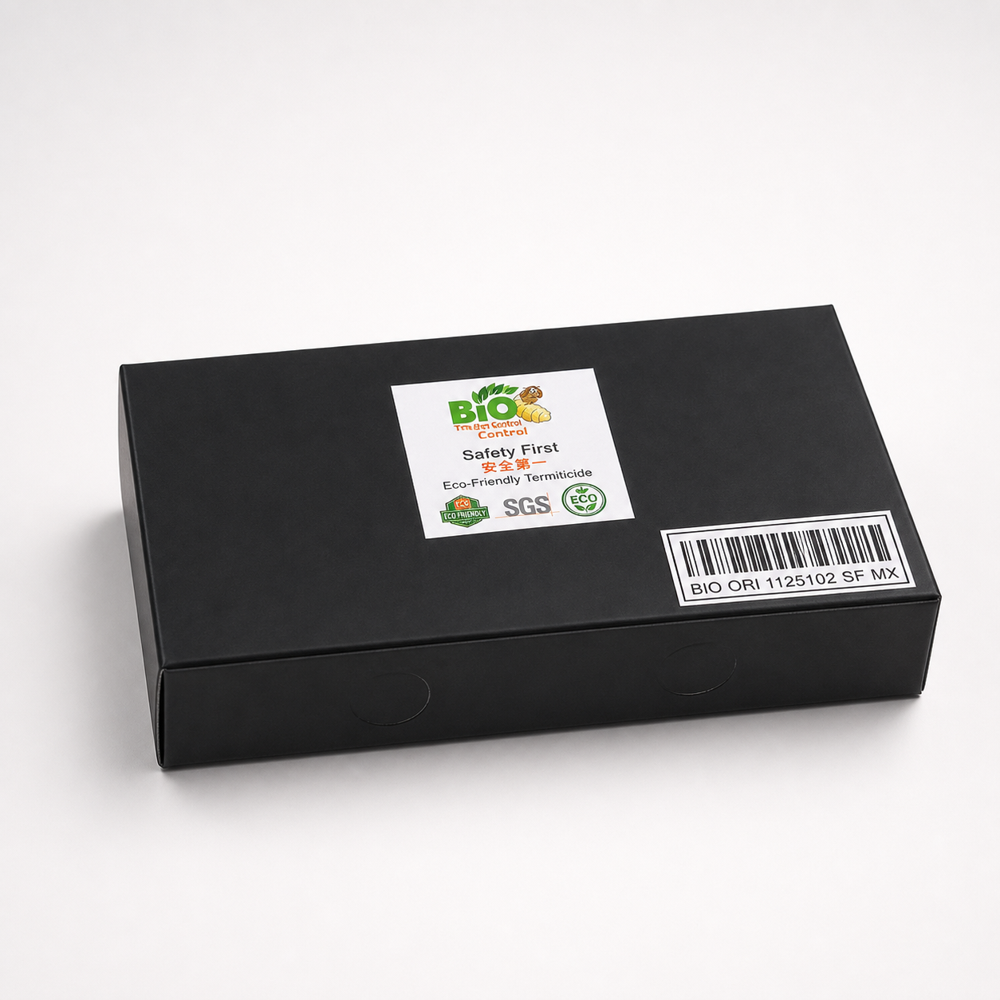
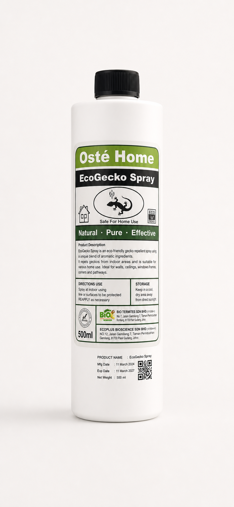
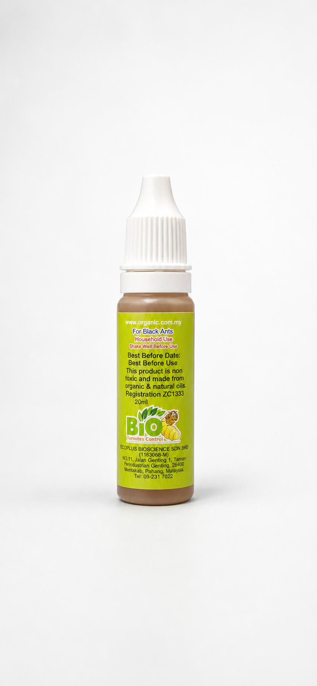
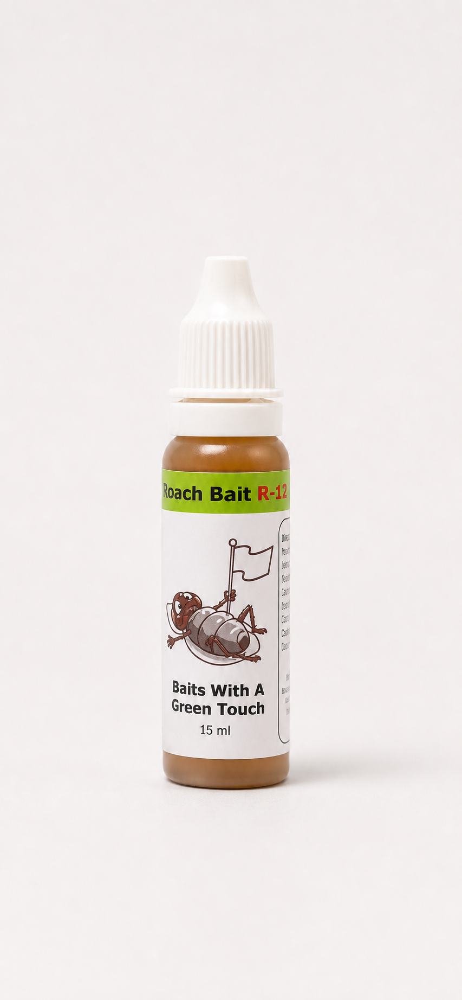

介绍 / Introduction
白蚁常隐藏在木材、墙体、天花、地板及潮湿区域，早期不容易发现。我们协助顾客检查、判断和处理白蚁活动。Termites often hide in timber, walls, ceilings, flooring, and damp areas. We help customers inspect, identify, and treat termite activity.
为住宅、店铺、办公室及商业空间提供白蚁检查、灭巢处理、Bio Bait System 和环保害虫防治产品。Professional termite inspection, termite nest treatment, Bio Bait System service, and eco-friendly pest control products for residential and commercial spaces.
BIO Termites Control 专注白蚁防治与害虫控制，结合环保理念、bait system 方法和清楚的服务流程，帮助顾客处理家居与商业空间的白蚁问题。BIO Termites Control focuses on termite control and pest management through eco-friendly concepts, bait system methods, and a clear service process.
白蚁常隐藏在木材、墙体、天花、地板及潮湿区域，早期不容易发现。我们协助顾客检查、判断和处理白蚁活动。Termites often hide in timber, walls, ceilings, flooring, and damp areas. We help customers inspect, identify, and treat termite activity.

Bio Bait System 适合用于白蚁灭巢与后续观察。处理方式以系统化检查、设置和跟进为重点。The Bio Bait System is suitable for termite nest treatment and follow-up observation through systematic inspection, setup, and monitoring.
Hunter Wu 提供现场检查、报价建议、处理安排与后续跟进，让顾客更安心了解每一步。Hunter Wu provides site inspection, quotation advice, treatment arrangement, and follow-up support so customers understand every step clearly.
我们为住宅与商业客户提供害虫控制服务，并采用生物科技与环保方法处理有害生物问题。We provide pest control services for residential and commercial customers, using biotechnology and eco-friendly methods to manage pest issues.
Bio Termites 以生物科技和环保方式为核心，提供住宅与商业害虫控制服务。我们的服务方向注重对环境更友善，同时有效处理不同类型的有害生物问题。
Bio Termites focuses on biotechnology and eco-friendly pest control services for residential and commercial spaces, helping address pest problems while being mindful of environmental concerns.
技术人员会接受培训，以确保服务过程更专业，并尽力满足顾客需求。
Service technicians are trained to provide professional service and support customer needs.
根据检查结果，我们建议使用 Bio Termites Control Baiting System 作为处理白蚁入侵的有效方式之一。
Based on inspection findings, we recommend the Bio Termites Control Baiting System as one effective approach for termite infestation management.
这个方法针对白蚁巢群源头，通过诱饵系统逐步控制白蚁活动，并提供较长期的防护方向。使用错误的处理方式，可能导致白蚁扩散并加重问题。
This method targets termite colonies at the source through a baiting system, helping control termite activity and support long-term protection. Using the wrong treatment approach may cause the colony to spread and worsen the infestation.
品牌资料显示，BIO Termites Control 注重安全、检测认证与环保方向，为顾客提供更安心的白蚁与害虫防治方案。According to the brand materials, BIO Termites Control emphasizes safety, certification, and eco-friendly pest control solutions.
资料中展示多份 SGS 文件与检测报告，提升顾客对产品与服务的信心。The materials show SGS documents and reports to support customer confidence.
强调 Eco Friendly 环保理念，适合重视家居安全与环境友善的顾客。Eco-friendly positioning for customers who care about home safety and environmental responsibility.
品牌资料列出 1 Million Liability Protection 标示，体现专业服务保障形象。Brand materials include a 1 Million Liability Protection mark as part of the professional assurance presentation.
以“安全第一”为服务理念，重视顾客、家居与处理过程的安心感。Safety First reflects the commitment to customer confidence, home care, and a responsible service process.
地下白蚁会在地底建立巢穴，并通过地下通道到建筑物寻找木材和食物来源。Bio Termites Control 诱饵系统利用白蚁自然觅食和互相喂食的行为，把诱饵带回巢群，帮助达到灭巢效果。Subterranean termites build colonies underground and move through hidden tunnels to search for food. The Bio Termites Control baiting system uses their natural foraging and feeding behavior to carry bait back to the colony.
工蚁会不断寻找食物来源。当发现诱饵后，工蚁会进食并把信息传递给其他成员，让更多白蚁来到诱饵站取食。
Worker termites search continuously for food. Once they find the bait, they feed on it and recruit other colony members to the bait station.
诱饵中的成分会干扰白蚁蜕皮和成长过程，使白蚁群逐步减少活动，最终帮助达到消除巢群的目标。
The bait contains an insect growth regulator that disrupts termite molting and development, helping reduce colony activity and work toward colony elimination.
先检查木材、墙角、天花、地板、蚁路和潮湿位置，确认白蚁活动范围。Inspect timber, walls, ceilings, flooring, mud tubes, and damp areas to identify termite activity.
在合适位置设置诱饵站，让白蚁自然进入并取食诱饵。Bait stations are placed at suitable locations so termites can naturally enter and feed.
白蚁通过互相喂食和信息素路径，把诱饵影响传回巢群。Through food sharing and scent trails, the bait effect is transferred back into the colony.
诱饵站也可作为预防措施，帮助减少新白蚁群攻击建筑结构的风险。Bait stations may also be used as a preventive measure to help reduce the risk of new termite activity attacking the structure.
诱饵系统可根据白蚁活动位置，设置在室内或户外重点区域，帮助追踪白蚁活动并进行持续处理。The baiting system can be installed indoors or outdoors based on termite activity, helping monitor and treat termite movement over time.
适合设置在墙角、橱柜边、门框附近、木地板边缘和白蚁出没位置。Suitable for wall corners, cabinet edges, door frames, timber flooring edges, and active termite areas.
如果墙面、砖缝或木结构附近出现蚁路，可在附近安排诱饵站观察与处理。When mud tubes appear near walls, brick gaps, or timber structures, bait stations can be placed nearby for monitoring and treatment.
可设置在建筑外墙周边、庭院、泥土、花园或白蚁可能进入建筑的路径。Outdoor stations can be placed around building perimeters, gardens, soil areas, and possible termite entry paths.
户外地面、草地或潮湿区域适合设置监测点，帮助及早发现新白蚁活动。Ground, lawn, and damp outdoor areas can be monitored to help detect new termite activity early.
诱饵站位置会根据现场检查结果决定，避免随意摆放导致效果不理想。Bait station placement is decided after inspection to avoid poor results from random installation.
设置后可安排后续检查，观察白蚁取食情况和活动变化。Follow-up monitoring helps observe termite feeding behavior and changes in activity.
从联系、检查、报价、设置系统到后续跟进，流程清楚，方便顾客了解服务安排。From contact, inspection, quotation, system setup, and follow-up, the process is clear and easy for customers to understand.
顾客联系 Hunter Wu，说明白蚁或害虫出没位置。Contact Hunter Wu and describe where termites or pests appear.
检查可疑区域、蚁路、木材损坏和潮湿位置。Inspect suspicious areas, mud tubes, damaged timber, and damp spots.
根据现场情况提供处理方案与费用说明。Provide treatment recommendations and pricing based on the site condition.
按需要设置 Bio Bait System 或相关处理方案。Set up the Bio Bait System or a suitable treatment plan when needed.
安排后续检查，观察白蚁活动变化。Arrange follow-up checks to observe changes in termite activity.
确认白蚁活动情况，并按现场结果调整建议。Review termite activity and adjust advice according to the result.
提供木材、潮湿区域和缝隙位置的预防建议。Provide prevention advice for timber, damp areas, cracks, and gaps.
顾客可通过电话或 Facebook 继续联系咨询。Customers can continue enquiries by phone or Facebook.
除了白蚁防治，也提供壁虎驱赶、黑蚁驱赶和蟑螂诱饵等环保害虫控制产品。In addition to termite control, we provide eco-friendly pest products such as gecko repellent, black ant repellent, and cockroach bait.
通过 SGS 标示的环保白蚁防治产品，适合用于白蚁控制相关场景。An eco-friendly termite control product with SGS marking, suitable for termite control applications.

天然环保型壁虎驱赶喷雾，适用于墙面、门窗、厨房周围和常见出没位置。A natural, eco-friendly gecko repellent spray for walls, doors, windows, kitchens, and common activity areas.

小瓶设计，适合用于墙角、门窗边、厨房周围、缝隙或蚁路附近。A small bottle product suitable for corners, door and window edges, kitchen areas, cracks, and ant trails.

蟑螂药水型诱饵，适合点涂在厨房角落、橱柜边、下水道附近和电器后方。A cockroach bait liquid for targeted use around kitchen corners, cabinets, drains, and behind appliances.
我们重视顾客体验、清楚沟通和后续服务。We value customer experience, clear communication, and follow-up service.
服务讲解清楚，检查后会说明问题位置和处理建议。
住宅顾客 / Home Customer适合店铺和办公室咨询，流程简单，报价说明清楚。
商业顾客 / Business Customer产品和服务选择清楚，方便针对不同害虫问题处理。
产品顾客 / Product Customer欢迎留下姓名、电话、地区和白蚁问题说明，Hunter Wu 可根据情况回复检查与报价建议。Leave your name, contact number, area, and termite issue details so Hunter Wu can advise on inspection and quotation.
Hunter Wu 白蚁灭巢专家
电话 / Call:
017-613 8978
WhatsApp:
WhatsApp 017-613 8978
Facebook:
Hunter Wu Facebook Page
服务范围 / Service:
白蚁防治、白蚁灭巢、Bio Bait System、环保害虫控制产品。